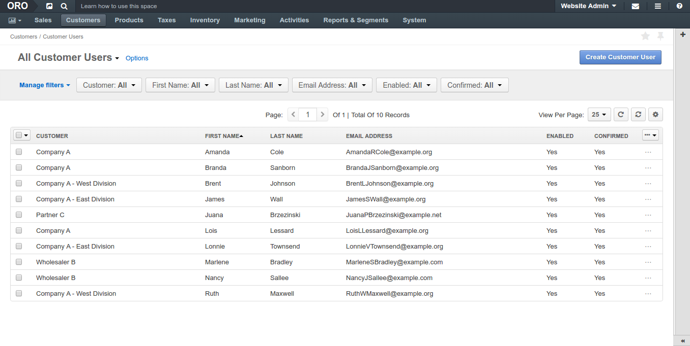
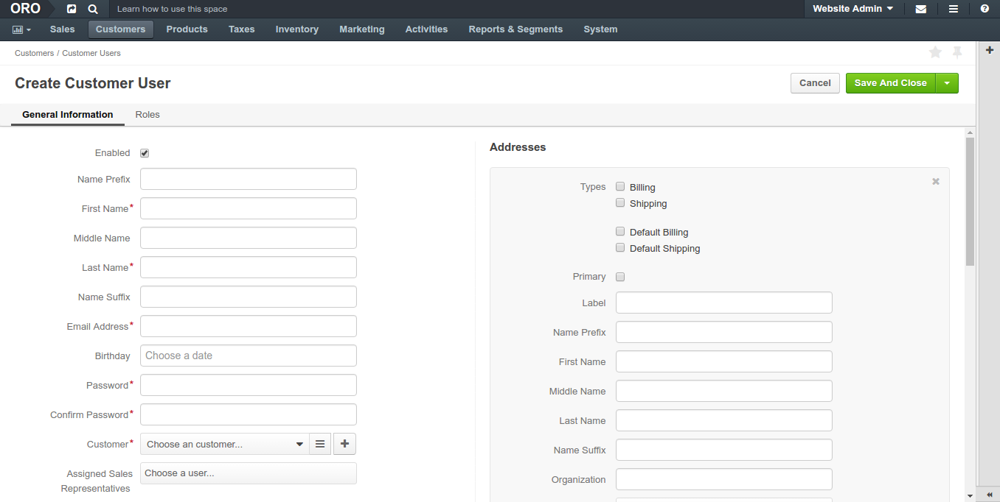

Customer Users¶
Customer users act on behalf of the company and may have a limited set of permissions in OroCommerce, depending on their function in the customer organization.
For customer user management, navigate to Customers > Customer Users in the main menu.
In Customer Users section, you can:
View, edit and create new customer users
Select their roles in OroCommerce to define their level of permissions and access to the actions and data in OroCommerce store frontend
Manage customer user information:
- Name
- Birthday
- Email address
- Billing and shipping address and phone number (using address book)
- Customer user role(s)
- Website to redirect the customer upon login
View requests for quotes, sales orders, quotes created or submitted by the customer user
View communication with the customer that happened using email, notes or scheduled events
View additional information attached to customer user
Enable and disable the customer
Reset the customer user password
Note
You can delegate this function to the customer who will access user and role management in the OroCommmerce front store (see Delegating Users and Role Management to the Customer section for more information).
Customer Account Confirmation
Upon registration, customer user receives an email confirmation request. Once they follow up with the requested action, their account is marked as confirmed.
Create a Customer Users¶
To create a new Customer:
Navigate to Customers > Customer Users in the main menu.
Click Create Customer User.
The following page opens:
Fill in customer Name and other personal information.
Select a customer this user represents.
If you are adding a subsidiary of the existing customer, select Parent Customer.
Assign a sales representative who will be assisting this customer user. By default, the customer sales representative applies to the customer user.
Check the Generate Password and Send Welcome Email boxes.
Select the Website the customer user will be redirected to upon the login. See Managing Websites for more information.
Add billing and shipping address as described in Address Book section.
In the Roles section, select the roles that should apply to the customer user. When several roles are selected, granted permissions are accumulated from all the assigned roles. See Managing Customer User Roles for more information.
Click Save on the top right of the page.
The new Customer User is created.
Export¶
You can export the customer user details in the .csv format:
- Select the items to export using check boxes at the beginning of the corresponding rows. You can filter the list and use the Select All option in the table header, if necessary.
- Click Export.
Later you can import the updated or processed customer information using import as described below.
Import¶
To streamline adding, editing, and deleting a large bulk of items, like customer information, products, prices or inventory information, you can import the bulk details from a .csv file.
Import the customer user information using the .csv file that follows the customer user details data structure.
Example of customer user bulk import template
| ID | Name Prefix | First Name | Middle Name | Last Name | Name Suffix | Birthday | Email Address | Customer Id | Customer Name | Roles 1 Role | Enabled | Confirmed | Owner Id | Website Id |
|---|---|---|---|---|---|---|---|---|---|---|---|---|---|---|
| Mr | Jerry | John | Coleman | Jr. | 04/19/1987 | example@email.com | Oro Inc. | ROLE_FRONTEND_BUYER | 1 | 0 | 1 | 1 |
To import a bulk of customer users information:
- Navigate to the Customers > Customer Users.
Get a sample: To download a sample .csv file with the necessary headers, click Download Data Template in the list next to Import.
Note
Follow the on-screen guidance for any additional actions. For example, for the inventory template, select one of the options: a) inventory statuses only or b) detailed inventory levels.
Prepare data for import: Based on the downloaded file, create your bulk information in .csv format. Once your file is ready, click Import, select the prepared comma-separated values (.csv) file, and click Submit.
Validate import results: Review import validation results. If there are any Records with errors, fix them in the .csv file prior to starting the import.
Launch import: After successful validation, click Import.
Interactive status messages inform about the import progress and once the import is complete, the changes are reflected in the list upon refresh. Additionally, an email message with the import status is delivered to your mailbox.
See this two minute demo of the import process:
Related Information